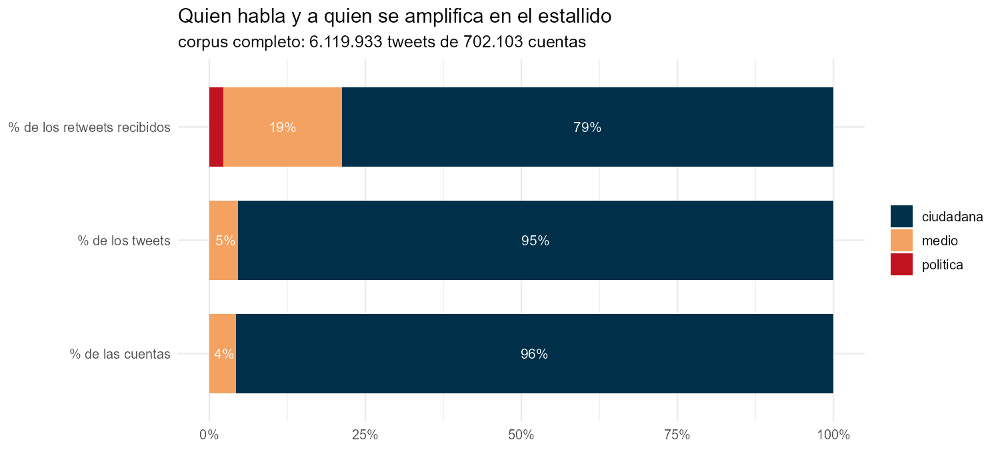

171 cargos identificados, y su peso real en la conversación
Identificar a los políticos en un corpus de 702.103 cuentas no se hace adivinando handles. Se parte del padrón real —diputados, senadores, ministros, Presidente y presidentes de partido en ejercicio en octubre de 2019— y se cruza contra tres fuentes: las reseñas biográficas de la Biblioteca del Congreso Nacional, Wikidata, y búsqueda por nombre validada contra la biografía.
ver código
g <- pol[, .(Cuentas = .N), by = .(Cargo = cargo)][order(-Cuentas)]tabla(g)
Warning in prettyNum(.Internal(format(x, trim, digits, nsmall, width, 3L, :
'big.mark' y 'decimal.mark' son ambos '.', lo cual puede ser confuso
Tabla 1: Cuentas identificadas por cargo.
Cargo
Cuentas
diputado
135
senador
28
ministro-desde-28oct
3
ministro
2
ministro-hasta-28oct
1
presidente
1
presidente-partido
1
De los 156 diputados en ejercicio durante la ventana del corpus, 135 tienen cuenta identificada (87%), 65 confirmadas por dos fuentes independientes.
Warning in prettyNum(.Internal(format(x, trim, digits, nsmall, width, 3L, :
'big.mark' y 'decimal.mark' son ambos '.', lo cual puede ser confuso
Warning in prettyNum(.Internal(format(x, trim, digits, nsmall, width, 3L, :
'big.mark' y 'decimal.mark' son ambos '.', lo cual puede ser confuso
Warning in prettyNum(.Internal(format(x, trim, digits, nsmall, width, 3L, :
'big.mark' y 'decimal.mark' son ambos '.', lo cual puede ser confuso
Warning in prettyNum(.Internal(format(x, trim, digits, nsmall, width, 3L, :
'big.mark' y 'decimal.mark' son ambos '.', lo cual puede ser confuso
Warning in prettyNum(.Internal(format(x, trim, digits, nsmall, width, 3L, :
'big.mark' y 'decimal.mark' son ambos '.', lo cual puede ser confuso
Tabla 2: Las tres clases de cuenta y su participación.
Clase
Cuentas
% cuentas
% tweets
% retweets
RT por cuenta
ciudadana
672.258
95.75
95.35
78.75
6.3
medio
29.720
4.23
4.63
19.02
34.3
politica
125
0.02
0.02
2.23
955.9

Dos lecturas que apuntan en direcciones opuestas y las dos son ciertas:
Una cuenta política recibe 956 retweets, una ciudadana 6. Es una ventaja de 152 veces por cuenta.
Pero la clase política concentra apenas el 2,2% de la amplificación total. De las 15 cuentas más retuiteadas del corpus completo, una sola es de un cargo electo. El estallido amplificó abrumadoramente a cuentas sin cargo.
Warning in prettyNum(.Internal(format(x, trim, digits, nsmall, width, 3L, :
'big.mark' y 'decimal.mark' son ambos '.', lo cual puede ser confuso
Warning in prettyNum(.Internal(format(x, trim, digits, nsmall, width, 3L, :
'big.mark' y 'decimal.mark' son ambos '.', lo cual puede ser confuso
Warning in prettyNum(.Internal(format(x, trim, digits, nsmall, width, 3L, :
'big.mark' y 'decimal.mark' son ambos '.', lo cual puede ser confuso
Tabla 3: Textos únicos producidos y circulación obtenida.
Clase
Textos únicos
Circulación
Circulación por texto
politica
451
119.921
265.9
medio
89.059
1.107.919
12.4
ciudadana
665.994
4.892.093
7.3
La clase política produce 451 textos únicos en 19 días y obtiene 119.921 retweets. Un texto suyo circula 36 veces más que uno ciudadano. No amplifica por volumen sino por rendimiento.
Eso tiene una consecuencia metodológica incómoda: con 451 textos no se puede construir un perfil léxico. La especificidad termina premiando rarezas de dos o tres tweets virales. Esa medición está calculada en el repositorio pero marcada como no interpretable.
Dónde están en la red
Las 125 cuentas políticas presentes el 18 de octubre están todas dentro de una sola comunidad, la 10, donde son el 8,8% de los tweets. Cero en las otras siete.
Asimetría por partido
ver código
d <- dip[en_ejercicio_oct2019 ==TRUE]ab <-c("Partido Comunista de Chile"="PC","Revolución Democrática"="RD","Convergencia Social"="CS","Partido Humanista"="PH","Partido Renovación Nacional"="RN","Partido Unión Demócrata Independiente"="UDI","Partido Evolución Política"="Evópoli","Partido Socialista de Chile"="PS","Partido por la Democracia"="PPD","Partido Demócrata Cristiano"="DC")d[, P :=fifelse(partido %in%names(ab), ab[partido], "otros/sin dato")]t <- d[, .(Diputados = .N, `En el corpus`=sum(presente_corpus),RT =sum(rt_recibidos, na.rm =TRUE)), by = P]t[, `% presentes`:=round(100*`En el corpus`/ Diputados)]t[, `RT por diputado`:=round(RT / Diputados)]tabla(t[Diputados >=4][order(-`RT por diputado`)], align ="lrrrrr")
Warning in prettyNum(.Internal(format(x, trim, digits, nsmall, width, 3L, :
'big.mark' y 'decimal.mark' son ambos '.', lo cual puede ser confuso
Warning in prettyNum(.Internal(format(x, trim, digits, nsmall, width, 3L, :
'big.mark' y 'decimal.mark' son ambos '.', lo cual puede ser confuso
Warning in prettyNum(.Internal(format(x, trim, digits, nsmall, width, 3L, :
'big.mark' y 'decimal.mark' son ambos '.', lo cual puede ser confuso
Warning in prettyNum(.Internal(format(x, trim, digits, nsmall, width, 3L, :
'big.mark' y 'decimal.mark' son ambos '.', lo cual puede ser confuso
Warning in prettyNum(.Internal(format(x, trim, digits, nsmall, width, 3L, :
'big.mark' y 'decimal.mark' son ambos '.', lo cual puede ser confuso
Tabla 4: Diputados en ejercicio: presencia en el corpus y amplificación.
P
Diputados
En el corpus
RT
% presentes
RT por diputado
PC
8
8
36.218
100
4.527
RD
8
8
23.534
100
2.942
otros/sin dato
39
20
8.273
51
212
Evópoli
6
4
1.190
67
198
RN
31
14
3.493
45
113
DC
14
10
678
71
48
PS
17
16
805
94
47
UDI
24
6
522
25
22
PPD
6
2
0
33
0
La lectura fácil sería “la derecha no estaba”, pero no se sostiene: RN supera al PPD, la DC y el PS. Lo que muestran los datos es otra cosa — la conversación amplificó al PC y al Frente Amplio, y dejó afuera por igual al gobierno y a la ex-Concertación.
Y hay dos formas distintas de quedar fuera. El PS tiene al 94% de sus diputados presentes en el corpus pero casi nadie los retuitea: tuitearon y no los escucharon. La UDI tiene al 25%: directamente no estaban.